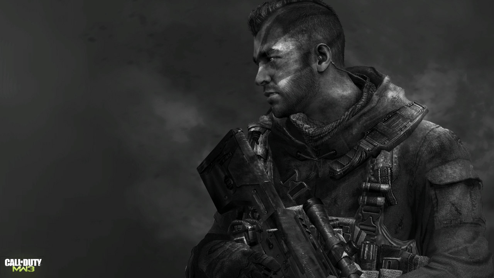

2026年11月
剩余名额：1
我的文评是义务性质的，也就是说，它完全免费。因此，该文评注定无法提供 如付费文评一般的评论质量与服务体验。
我在博客上会更新我自己的文章的文评。如果您可以接受我的风格与审美，欢迎您申请义务文评。
1. 请您确保您的作品在我的同人圈范围内（即，我们是同坑），这有助于我更好地理解您的作品。
2. 本人究极杂食，也没太多雷点，所以分类和配对等都不做限制，但有些过于变态的Play（比如圣水、黄金，还有单纯的身体和心理虐待）我实在吃不下😱。
3. 可以评车，但是不保证效果。
4. 以划线评为主，默认夸夸，会写我看到的第一感受，以及我非常喜欢的用词与句子。但请注意，我并非专业人士，无法为您提供专业的写作反馈，只能作为读者与您分享我的阅读体验。
5. 文章字数最好在10000字以内。文体不限，诗歌除外。
6. 我会全程真人手评，因此，不接受 AI 生成内容（只在创作过程中利用 AI 查资料、分析设定的文章不算），目前我也不也打算鉴定 AI 文，所以请不要交给我 AI 文章，否则我会骂您 (?)。
7. 收到您的作品后约30天后可以完成，完成后会通过邮件发到您的邮箱里。
8. 我会在我的博客上同步更新一篇简易文评并附上您的作品链接（如有），如果您不希望如此，或是有其他要求，请在邮件中写明。能附上写作背景（您写这篇文章的契机）和预期效果（希望读者看完之后怎么想）就更好啦！
9. 无排期计划，不支持占位或排队。有老师约评后我会立即更新剩余名额。如果您看到名额为0，就请勿再发送文章啦！
10. 未经您同意，我不会转载您的文章，或将其交给其他人阅读。
如果您已阅读并接受，请通过电子邮件发送文章。可接受 Docx 文档（请置于附件中）或 AO3 链接 (?)。
